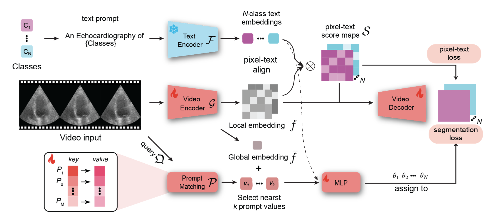
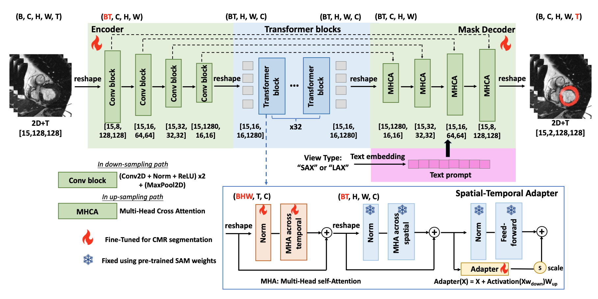

Sekeun KimPh.D.
Dept. of Radiology
| |


Bio
- I am currently a postdoctoral research fellow at the Center for Advanced Medical Computing and Analysis, Harvard Medical School/Massachusetts General Hospital, working with Prof. Quanzheng Li.
-
Ph.D in Biomedical Engineering, Yonsei Universitiy, College of Medicine. (Full-funded scholarship)
Thesis Title : Deep learning on Multiphysical Features and Hemodynamic Modeling for Abdominal Aortic Aneurysm Growth Prediction.
Advisor : Hyuk-jae Chang, MD, PhD & Sunkook Yoo, PhD & Seung-ik Baek, PhD
-
B.S in Biomedical Engineering, Yonsei University. (Full-funded scholarship)
Jan 2010 - Jan 2016 Bachelor (2012-2014 : Ministry of Defense)
News
- [2/2025] Our paper MediViSTA-SAM was accepted by IEEE Journal of Biomedical and Health Informatics. Link
- [1/2025] Our paper ECHOPulse was accepted by ICLR 2025. Link
- [09/2024] Awarded National Grant, Korean Scientist award from The Biological Research Information Center, South Korea (한국연구재단 세종과학펠로우십)
- [08/2024] Our paper "Ma-sam: Modality-agnostic sam adaptation for 3d medical image segmentation" is avaiable on Medical Image Analysis. Link
- [08/2024] Our paper "Temporal-spatial Adaptation of Promptable SAM Enhances Accuracy and Generalizability of Cine CMR Segmentation," presented at the 2nd International Workshop on Foundation Models for General Medical AI (MICCAI).
- [05/2024] Our paper "Autonomous Robotic Ultrasound System for Liver Follow-up Diagnosis: Pilot Phantom Study" is available on arxiv. Link
- [04/2024] I present a talk @Korea-Anam Hospital Grateful for this opportunity and looking forward to sharing insights with the community (in-person).
- [04/2024] I present a talk @Soongsil University. Grateful for this opportunity and looking forward to sharing insights with the community (in-person).[poster]
- [04/2024] I present a talk @Dong-Ah University. Grateful for this opportunity and looking forward to sharing insights with the community (in-person).[poster]
- [04/2024] I present a talk @Pusan University. Grateful for this opportunity and looking forward to sharing insights with the community (in-person).
- [04/2024] Our paper "A Prompt-driven Universal Model for View-Agnostic Echocardiography Analysis" is available on arxiv.
- [03/2024] Our paper "Cardiac Magnetic Resonance 2D+T Short- and Long-axis Segmentation via Spatio-temporal SAM Adaptation" is available on arxiv.
- [01/2024] I present a talk @Korea ANAM University. Grateful for this opportunity and looking forward to sharing insights with the community. [poster]
- [01/2024] Our paper Assessment of Valve Regurgitation Severity via Contrastive Learning and Multi-view Video Integration is accepted on Physics in Medicine and Biology.
- [09/2023] Our paper MediViSTA-SAM: Zero-shot Medical Video Analysis with Spatio-temporal SAM Adaptation is available on arxiv.
- [06/2023] Our paper Tailoring Large Language Models to Radiology: A preliminary approach to LLM adaptation for a highly specialized domain is available on Machine Learning in Medical Imaging, MICCAI workshop.
- [09/2022] Our paper Deep learning on multiphysical features and hemodynamic modeling for abdominal aortic aneurysm growth prediction is avaiable on IEEE Transactions on Medical Imaging (TMI).
- [05/2022] Our paper Fully automated quantification of cardiac chamber and function assessment in 2-D echocardiography: clinical feasibility of deep learning-based algorithms is accepted on The International Journal of Cardiovascular Imaging.
Research Experience
- 2024 - Now : Massachusetts General Hospital, Cardiology Division, Harvard Medical School. (supervisor: Judy Hung)
- 2024 - Now : Massachusetts General Hospital, Cardiology Division, Harvard Medical School. (supervisor: Ik-kyung Jang)
- 2022 - Now : Research Fellow, Massachusetts General Hospital, Harvard Medical School. (supervisor: Quanzheng, Li)
- 2022 - Now : Harvard School of Engineering and Applied Sciences. (collaboration: Na Li)
- 2016 - 2022 : PhD in Biomedical Engineering at Yonsei University, College of Medicine. (supervisor: Hyuk-jae Chang and SunKook Yoo)
-
Nov, 2019 : Connect AI Research Center, Yonsei Severance Hospital
Michigan State University
Advisor : Seungik Baek
Invited scholar
Topic : Deep Learning For Prediction of Abdominal Aortic Aneurysm (AAA) Growth Prediction
-
Aug, 2016 : Cedars-Sinai Medical Center, Los Angeles, CAgoogl
Advisor : Debiao Li , Christopher Nguyen
Invited scholar
Topic : Myocardium Fiber Tracking & Visualization from Diffusion Tensor MRI
Award
- Best Innovative Research Paper in Yonsei University, 2022
- Young Investigator AWARDS 7th Severance Cardio-Cerebrovascular Research Cluster Annual Symposium, 2021
- Prize, Yonsei Junior Integrative Research Group, 2019
- Grand Prize, Yonsei Junior Integrative Research Group, 2019
- Grand Prize, Dream High Startup Competition, 2014
Selected Publications [Google Scholar]
| ECHOPulse: ECG Controlled Echocardio-gram Video Generation. Yiwei Li† · Sekeun Kim† · Zihao Wu · Hanqi Jiang · Yi Pan · Pengfei Jin · Sifan Song · Yucheng Shi · Xiaowei Yu · Tianze Yang · Tianming Liu · Quanzheng Li · Xiang Li ICLR, 2025 [paper]
|
|
| Autonomous Robotic Ultrasound System for Liver Follow-up Diagnosis: Pilot Phantom Study. Tianpeng Zhang†, Sekeun Kim†, Jerome Charton†, Haitong Ma, Kyungsang Kim∗, Na Li, Quanzheng Li arxiv, 2024. [paper]
|
|
|  | Prompt-driven Universal Model for View-Agnostic Echocardiography Analysis. Sekeun Kim, Hui Ren, Peng Guo, Abder-Rahman Ali, Patrick Zhang, Kyungsang Kim, Xiang Li, Quanzheng Li arxiv, 2024. [paper]
|
|  | Cardiac Magnetic Resonance 2D+T Short- and Long-axis Segmentation via Spatio-temporal SAM Adaptation. Zhennong Chen*, Sekeun Kim* , Hui Ren, Quanzheng Li, Xiang Li arxiv, 2024. [paper]
|
| Assessment of Valve Regurgitation Severity via Contrastive Learning and Multi-view Video Integration. Sekeun Kim, Hui Ren, Jerome Charton, Jiang Hu, Carola A Maraboto Gonzalez, Jay Khambhati, Justin Cheng, Jeena DeFrancesco, Anam A Waheed, Sylwia Marciniak, Filipe Moura, Rhanderson N Cardoso, Bruno B Lima, Suzannah Elisabeth McKinney, Michael H Picard, Xiang Li and Quanzheng Li Physics in Medicine & Biology, 2024. [paper]
|
|
| MediViSTA-SAM: Zero-shot Medical Video Analysis with Spatio-temporal SAM Adaptation. Sekeun Kim, Kyungsang Kim, Jiang Hu, Cheng Chen, Zhiliang Lyu, Ren Hui, Sunghwan Kim, Zhengliang Liu, Aoxiao Zhong, Xiang Li, Tianming Liu, Quanzheng Li Preprint, 2023. |
|

|
Tailoring Large Language Models to Radiology: A preliminary approach to LLM adaptation for a highly specialized domain. Zhengliang Liu, Aoxiao Zhong, Yiwei Li, Longtao Yang, Chao Ju, Zihao Wu, Chong Ma, Peng Shu, Cheng Chen, Sekeun Kim Haixing Dai, Lin Zhao, Dajiang Zhu, Jun Liu, Wei Liu, Dinggang Shen, Xiang Li, Quanzheng Li, and Tianming Liu MIML, MICCAI, 2023. [paper]
|
| Deep Learning on Multiphysical Features and Hemodynamic Modeling for Abdominal Aortic Aneurysm Growth Prediction. Sekeun Kim, Zhenxiang Jiang, Byron A. Zambrano, Yeonggul Jang , Seungik Baek, Sunkook Yoo , and Hyuk-Jae Chang IEEE TRANSACTIONS ON MEDICAL IMAGING (TMI), 2023. [paper]
|
|
| Fully automated quantification of cardiac chamber and function assessment in 2‐D echocardiography: clinical feasibility of deep learning‐based algorithms. Sekeun Kim, Hyung‐Bok Park, Jaeik Jeon1, Reza Arsanjani, Ran Heo, Sang‐Eun Lee, Inki Moon, Sun Kook Yoo, Hyuk‐Jae Chang The International Journal of Cardiovascular Imaging, 2022. [paper][code] |
Reconnection of fragmented parts of coronary arteries using local geometric features in X-ray angiography images. Kyunghoon Han, Jaeik Jeon, Yeonggul Jang, Sunghee Jung, Sekeun Kim, Hackjoon Shim, Byunghwan Jeon and Hyuk-Jae Chang Computers in Biology and Medicine, 2022. [paper] |
Artificial intelligence and echocardiography. Yeonyee E Yoon Sekeun Kim Hyuk Jae Chang Journal of Cardiovasculara Imaging, 2021. [paper]
|
Diagnostic Accuracy of a Novel On-site Virtual Fractional Flow Reserve Parallel Computing System. Hyung-Bok Park, Yeonggul Jang, Reza Arsanjani, Minh Tuan Nguyen, Sang-Eun Lee, Byunghwan Jeon, Sunghee Jung, Youngtaek Hong, Seongmin Ha, Sekeun Kim, Sang-Wook Lee, and Hyuk-Jae Chang Yonsei Med J, 2020. [paper] |
Full Quantification of Left Ventricle Using Deep Multitask Network with Combination of 2D and 3D Convolution on 2D + t Cine MRI. Yeonggul Jang, Sekeun Kim, Hackjoon Shim, and Hyuk-Jae Statistical Atlases and Computational Models of the Heart. Atrial Segmentation and LV Quantification Challenges, MICCAI workshop , 2019. [paper]
|
Three-dimensional Cardiomyocytes Structure Revealed By Diffusion Tensor Imaging and Its Validation Using a Tissue-Clearing Technique. Sang-Eun Lee, Christopher Nguyen, Jongjin Yoon, Hyuk-Jae Chang, Sekeun Kim, Chul Hoon Kim & Debiao Li Scientific Reports, 2018. [paper]
|
A Cascaded Two-step Approach For Segmentation of Thoracic Organs. Sekeun Kim, Yeonggul Jang, Kyunghun Han, Hackjoon Shim, and Hyuk-Jae Chang SegTHOR workshop IEEE International Symposium on Biomedical Imaging (ISBI) 2019. [paper]
|
Fully Automatic Segmentation of Coronary Arteries based on Deep Neural Network in Intravascular Ultrasound Images. Sekeun Kim, Yeonggul Jang, Byunghwan Jeon, Youngtaek Hong, Hackjoon Shim, and Hyukjae Chang Intravascular Imaging and Computer Assisted Stenting and Large-Scale Annotation of Biomedical Data and Expert Label Synthesis, MICCAI workshop 2018. [paper]
|
Automatic Segmentation of LV and RV in Cardiac MRI. Yeonggul Jang, Yoonmi Hong, Seongmin Ha, Sekeun Kim, Hyuk-Jae Chang In MICCAI Workshop on Statistical Atlases and Computational Models of the Heart 2017. [paper]
|
Grant
-
[1] Development AI based Automated Echocardiography Analysis System. 2020 - Now My role was to research & develop the following:
1. Development of cardiac segmentation method for left ventricle ejection fraction (LVEF), and myocardium strain analysis. I developed video segmentation method to incorporate spatio-temporal features for echocardiography segmentation.
2. Development of auto 2D caliper measurement method in parasternal long axis view (PLAX).
3. System Integration : Development of application programming interface (API).
My role was to (1) develop annotation S/W for echocardiography (2) offer cloud service with API server system (3) connect PACS with developed S/W.
-
[2] Development of Various-type Feature-based Artificial Intelligence Gatekeeper Solution for the Screening of Coronary
Artery Disease
Ministry of Science and ICT (in total $4.6 million)
My role was to research & develop the following:
Development of full chamber segmentation of echocardiography in standard views.
-
[3] Korean Standard Cardiac Structure Datacenter
Ministry of Trade, Industry and Energy (in total $0.1 million)
My role was to research & develop the following:
Development of echocardiography annotation S/W for cardiac imaging center in Severance Hospital to generate high-quality of annotated dataset. I developed a C based standalone S/W and released to image analysis center.
-
[4] Development of Multi-modality Imaging and 3D Simulation-Based Integrative Diagnosis-Treatment Support Software
System for Cardiovascular Diseases
The Ministry of Science and ICT (in total $1 million)
My role was to research & develop the following:
Development of coronary artery segmentation method using intravascular ultrasound imaging.
2016 - 2020
-
[5] Yonsei-Cedars-Sinai Integrated Cardiovascular Imaging Center
National Research Foundation (in total $4.7 million)
My role was to research & develop the following:
Development of visualization S/W for cardiac Diffusion Tensor Imaging (DTI). I developed DTI S/W (C++) for cardiac fiber tracking visualization. I was supervised by Christopher Nguyen, Massachusetts General Hospital Assistant Professor of Medicine Harvard Medical School.